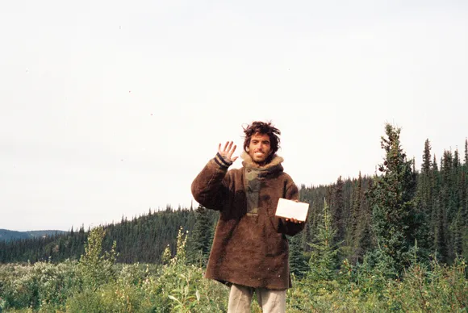

He felt his smile slide away, melt, fold over, and down on itself like a tallow skin, like the stuff of a fantastic candle burning too long and now collapsing and now blown out. Darkness. He was not happy. He was not happy. He said the words to himself. He recognized this as the true state of affairs. He wore his happiness like a mask and the girl had run off across the lawn with the mask and there was no way of going to knock on her door and ask for it back.
Fahrenheit 451, Ray Bradbury
A professor of mine (shoutout Dr. T) once told our class that he thought Chris McCandless was an idiot. McCandless, if you don’t know, died in August 1992 at the age of 24 after spending four months in the Alaskan bush.
Dr. T thought McCandless was an idiot because he was woefully unprepared to live in the wilderness. I don’t particularly care to argue about that in depth. Jon Krakauer does a wonderful job of that in the last two chapters of Into the Wild, his book detailing McCandless’ life and untimely death. Go read that if you’d like. I just think that to call McCandless ill-equipped is to kind of miss the whole point of his journey. He wanted to live off the land. He did not want to go to the Alaskan bush, live off canned meals and jerky before heading back to a comfortable life. To McCandless, “a challenge in which a successful outcome is assured isn’t a challenge at all,” (Krakauer 82).
He found something worth dying for. One can only hope to live that way.
I finished Into the Wild on an empty train, heading home late from work one night. It was almost dreamlike to read the final words, look up, and see no one around.
I feel so desperate to cut to the core of life in the same way Chris did. There are little things that make me happy - going for walks in new places, volunteering, saying something honest (on purpose), reading something that makes me cry, feeling tender - but they feel like respites, not the center of my life.
My therapist told me recently that discomfort is the price of attempting to live your life honestly. I don’t know that I am living authentically as much as I am trying to claw my way towards authenticity by way of pain. Leaving a religion forces you to reintroduce yourself to people and - at the very least - that process presents the appearance of authenticity. Almost like then I can say to myself: how could this version of me be fake when I’m paying for it with anxiety, discomfort, and disapproval from people I love? Surely this must be the real me.
And even though I know that who I am now isn’t necessarily more or less authentic than who I was before, I keep going. Mostly because there’s no going back. But also because I can’t help but feel - justifiably or not - that discomfort is meritorious in and of itself. It doesn’t have to be authentic. As long as it’s a pain in the ass.
I am unable to truly want what conveniently lines up with what I should want. I have this fear that when things align perfectly like that, I have just constructed a false narrative to delude myself. That I am weak-willed. That I want ease over truth.
Joan Didion says that people with self-respect know that anything worth having has its price (On Self-Respect). But what if something only feels worth having because it has a price? The only way I know I really love something - and the only way I feel secure in that love - is if there’s something standing in the way of it. I’m not quite sure what to do with that yet.
But I think, deep down, everyone feels something like that. It’s a common religious idea that pain is purifying, and that a good life is often at odds with an easy one. What we’re searching for is meaning, not just moment-to-moment happiness. Chris knew the price of meaning. He was one of those rare people, said a woman who once knew him, who “insisted on living out his beliefs” (Krakauer 67).
Near the end of his life, Chris highlighted a passage from Doctor Zhivago:
And so it turned out that only a life similar to the life of those around us, merging without a ripple, is genuine life, and that an unshared happiness is not happiness.
I wonder if Dr. T knows that Chris tried to leave the Alaskan bush. He wasn’t planning to stay out there forever. He had friends, stayed with people and wandered from place to place. It was only because the Teklanika River had risen too high that he decided to wait a few more weeks - a time period he didn’t survive - until it receded enough to cross.
Into the Wild is less about McCandless and more about the people who knew and loved him. The most heartbreaking parts of the story are from Ronald Franz who viewed McCandless like a son and who, upon hearing that McCandless had died, drove out into the desert where McCandless once lived, drank for the first time in years and hoped that it was enough to kill him.
Chris had marked that passage from Doctor Zhivago with a note: “HAPPINESS ONLY REAL WHEN SHARED.” Like I said earlier, I don’t quite know what to make of the feeling that pain is holy. I know it comes from somewhere. I know it means something. A meaningful life requires us to give of ourselves. Probably not for the sake of depletion or suffering as end in and of itself, but to offer something of ourselves to others. Punishment is not the same thing as benevolence; self-flagellation helps no one. If nothing else, we should remember to love our neighbors.
Chris weighed 67 pounds when he died of starvation likely caused by moldy seeds. The last words in his journal, written about two weeks after he became sick and weak, were simply: Beautiful blueberries.
References
Jon Krakauer, Into the Wild
Joan Didion, On Self-Respect
Ray Bradbury, Fahrenheit 451